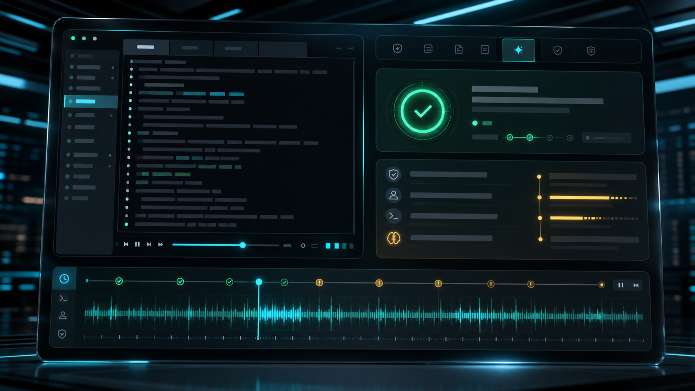

AI-native SSH access control plane
GOSSHD Bastion
为 AI 服务和自动化任务设计的命令级 SSH 安全网关：让智能体可以进入服务器完成工作， 同时把权限边界、风险拦截和审计回放留在团队手里。
AI 远程入口在线
高风险命令先过安全门
操作过程可回放
01
不用把裸 SSH 密钥交给 AI
02
私有服务器统一入口访问
03
危险命令执行前先判断
04
每次远程操作都能回放
AI 做了什么，看得见
远程执行不再是一段消失的黑屏。
当 AI 帮你巡检、排障、收集日志时，团队可以像看录像一样复盘它的每一步操作， 不再只依赖一行模糊的命令记录。
- 问题追溯
- 按时间线复盘远程会话
- 交付信任
- 给安全和业务可看的证据
让 AI 有行动力，也有刹车
高风险动作先被看见，再决定是否放行。
不是把服务器完全交给 AI，也不是把效率锁死在人工审批里。常规巡检自动通过， 敏感操作实时拦截，模糊场景交给模型按你的安全准则判断。

为团队准备的 AI 远程控制台
把服务器、策略和审计放在同一个清晰界面里。
给运维、安全和 AI 自动化团队一个共同入口：谁能访问、能做什么、发生过什么， 都能被清楚地看见和调整。
GOSSHD Control
AI 远程访问中心
巡检任务已放行
敏感命令已拦截
回放文件已归档
AI 运维入口
让智能体用熟悉的远程方式做事，但不再直接暴露服务器钥匙。
私有网络直达
内网服务器也能安全接入，适合测试环境、GPU 节点和客户现场机器。
命令安全门
日常巡检自动放行，高风险动作先被拦截或交给模型判断。
审计证据链
每次远程操作都有记录和回放，出了问题能解释，做对了也能证明。
首次启动
启动 SSH 控制平面。
gosshd-server \
--http-listen :18080 \
--ssh-listen :22022 \
--database-path ./data/gosshd.db \
--host-key-path ./data/gosshd_host_key \
--public-host bastion.example.com:18080